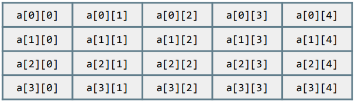

Como es de esperar, en el caso de las matrices también necesitaremos ayudarnos con bucles for para recorrerlas. Pero, ¿con qué condición?
Comportamiento de length
Como siempre, podemos obtener tanto la cantidad de filas como la cantidad de elementos de cada fila (columnas) con el método length. Por ejemplo, si a una matriz la identificamos como a:

- a.length vale 4 (hay 4 filas).
- a[0].length, a[1].length, etc. vale 5 (hay 5 columnas).
int[][] matriz = {{1,4,5},{6,7,2},{8,3,8}};
int filas = matriz.length; //3
int elementosFila0 = matriz[0].length; //3
int elementosFila1 = matriz[1].length; //3
int elementosFila2 = matriz[2].length; //3Recorrer matriz
Para recorrer un array de varias dimensiones lo podemos hacer con dos bucles for anidados.
- Los bucles anidados utilizarán dos índices, y cada índice se utilizará para una dimensión diferente.
- Si tuviéramos un array de 3 dimensiones, se necesitan 3 bucles anidados con 3 índices, aunque no es una estructura muy habitual.
- En matrices, la condición del bucle externo debe hacer referencia a la cantidad de filas, mientras que la condición del bucle interno debe hacer referencia a la cantidad de elementos de la fila actual (columnas).
//declaración y inicialización
int[][] matriz = {{1,4,5},{6,7,2},{8,3,8}};
//recorrido de la matriz
for (int fila = 0; fila < matriz.length; fila++) {
for (int columna = 0; columna < matriz[fila].length; columna++) {
System.out.print(matriz[fila][columna]+" ");
}
System.out.println();
}Rellenar matriz desde teclado
Puede ser que nos interese rellenar los valores de una matriz desde el teclado, pidiéndoselo al usuario. La forma de hacerlo es la siguiente:
Scanner sc = new Scanner(System.in);
System.out.print("Introduce el número de filas: ");
int filas = sc.nextInt();
System.out.print("Introduce el número de columnas: ");
int columnas = sc.nextInt();
int matriz[][] = new int[filas][columnas];
//proceso de rellenar la matriz
for (int i = 0; i < filas; i++) {
for (int j = 0; j < columnas; j++) {
System.out.print("Valor para la posición [" + i + "][" + j + "]: ");
matriz[i][j] = sc.nextInt();
}
}
//mostramos el resultado
System.out.println("La matriz ha quedado de la siguiente manera: ");
for (int i = 0; i < filas; i++) {
for (int j = 0; j < columnas; j++) {
System.out.print(matriz[i][j] + " ");
}
System.out.println(); //insertamos un salto de línea al final de cada fila para que se imprima fiel a la realidad
}Fíjate que en este ejemplo no hemos hecho referencia al método length, ya que como teníamos guardado el tamaño en las variables filas y columnas, no es necesario calcularlos para recorrer la matriz.